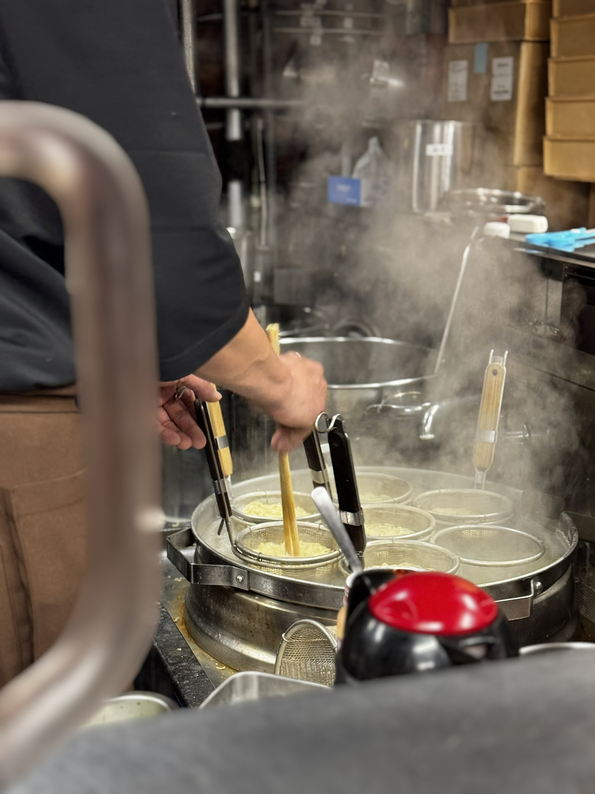

Sapporo / 18 Jan 2025 / 22:30
Arrival-night ramen in a tiny, busy alley.
After landing at New Chitose Airport and checking in, we went to the ramen alley near the hotel for a late dinner. The space was small and cramped, but in a way that felt very Japan: close, warm, efficient, and full of life.
Personal Review
Savoury broth after a long travel day
The broth was the highlight: very nice, savoury, and comforting at that hour. It was exactly the kind of first meal I wanted in Hokkaido after arriving at night.
The shop was not spacious, so it may not be the most relaxed place if you want a slow dinner. But for a late-night ramen stop, the cramped counter-style feeling actually added to the experience.
Worth it? Yes, especially as a first-night Sapporo food stop.
Back to Sapporo trip note

